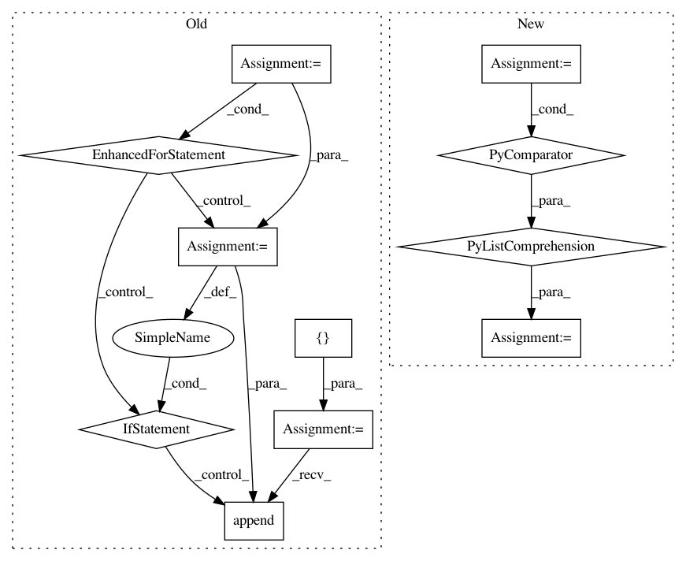

13bbee615c87c812ddcfff73746cd504222e3fb0,onmt/Models.py,,make_base_model,#Any#Any#Any#Any#Any#,561
Before Change
def make_base_model(opt, model_opt, fields, cuda, checkpoint=None):
// HACK: collect source feature vocabs.
feature_vocabs = []
for j in range(100):
key = "src_feat_" + str(j)
if key not in fields:
break
feature_vocabs.append(fields[key].vocab)
emb_opts = {"src_word_vec_size": model_opt.src_word_vec_size,
"position_encoding": model_opt.position_encoding,
"feat_merge": model_opt.feat_merge,
"feat_vec_exponent": model_opt.feat_vec_exponent,
After Change
// Make Encoder.
src_vocab = fields["src"].vocab
num_feat_embeddings = [len(feat_dict) for feat_dict in
ONMTDataset.collect_feature_dicts(fields)]
embeddings = build_embeddings(
model_opt, src_vocab.stoi[onmt.IO.PAD_WORD],
len(src_vocab), for_encoder=True,
num_feat_embeddings=num_feat_embeddings)
if model_opt.model_type == "text":
encoder = Encoder(model_opt.encoder_type, model_opt.brnn,
model_opt.rnn_type, model_opt.enc_layers,
In pattern: SUPERPATTERN
Frequency: 3
Non-data size: 11
Instances
Project Name: OpenNMT/OpenNMT-py
Commit Name: 13bbee615c87c812ddcfff73746cd504222e3fb0
Time: 2017-08-30
Author: nasa4836@gmail.com
File Name: onmt/Models.py
Class Name:
Method Name: make_base_model
Project Name: google/deepvariant
Commit Name: 0a159f32075b2e8a9c0875ff54a68b7ed457bd9a
Time: 2018-02-27
Author: mdepristo@google.com
File Name: deepvariant/make_examples.py
Class Name: RegionProcessor
Method Name: process
Project Name: evilsocket/pwnagotchi
Commit Name: 6a97476732c4029c701a3d0d448eb2ffe3ac706b
Time: 2019-12-02
Author: alanyee@users.noreply.github.com
File Name: setup.py
Class Name:
Method Name: